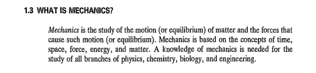
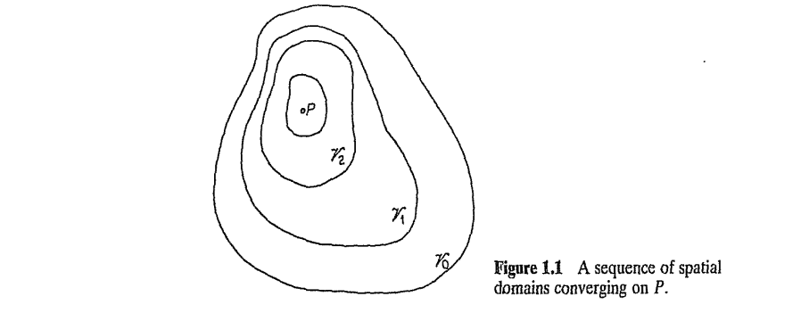
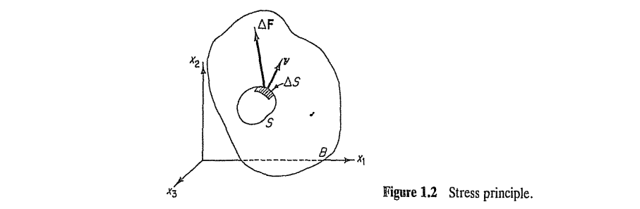
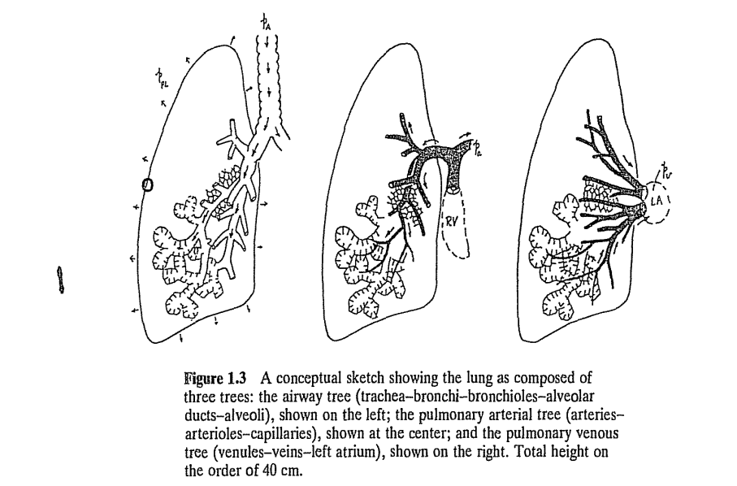
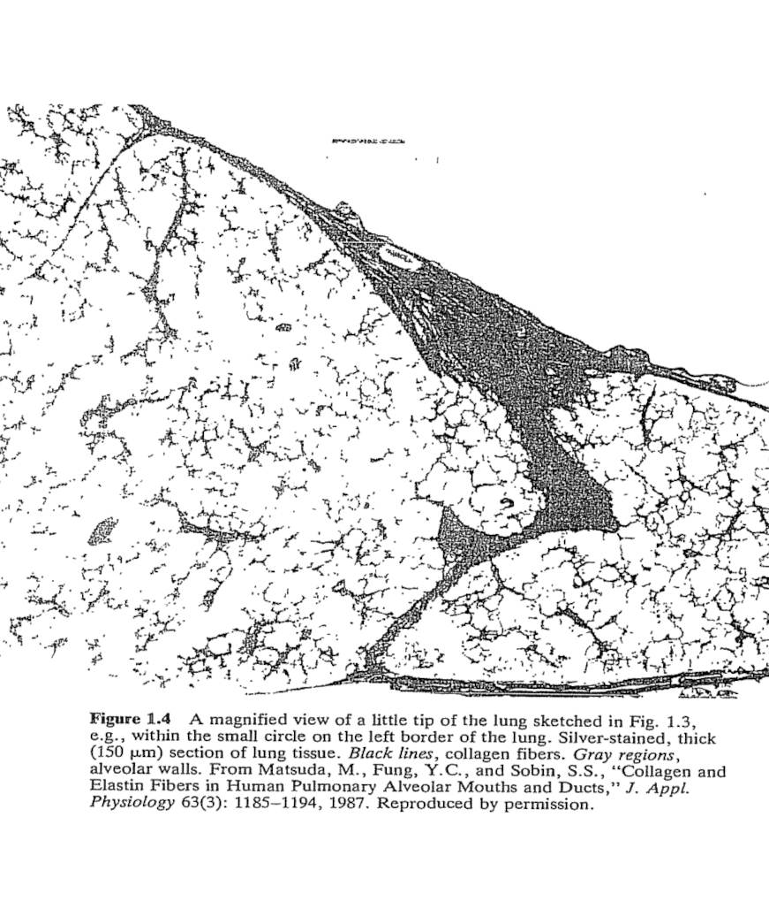
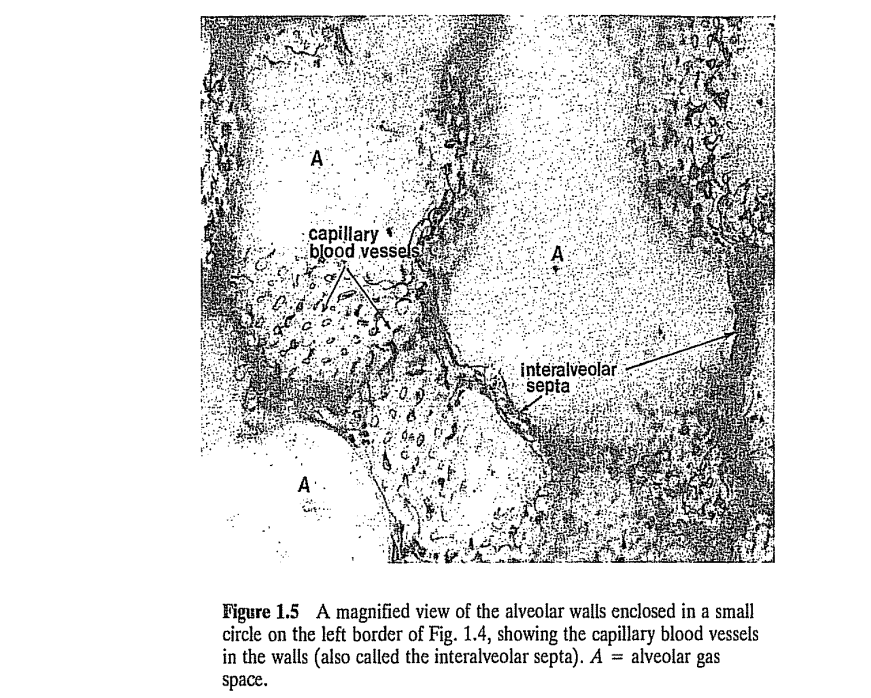
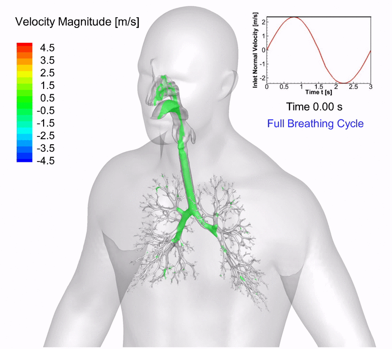
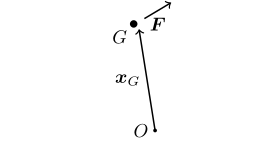
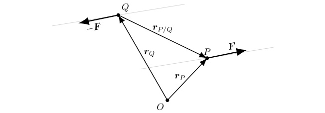
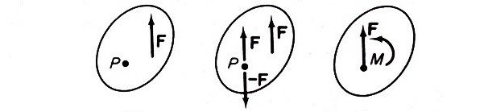

These changes (deformation, etc.) together with axioms of continuum mechanics, can be expressed as boundary value problems \[ \frac{\partial \sigma_{ij}}{\partial x_i} + f_j = \frac{\partial v_j}{\partial t}, \hspace{1em} \forall x \in \Omega \]

What is a Continuum?

The Scene:

\[ \overset{(\boldsymbol{n})}{\boldsymbol{t}} = \frac{d \boldsymbol{F}}{d S} \]
The stress principle of Euler and Cauchy.
The change of microstructure by shifting the scale of observation (i.e. switching the scale of magnification of a microscope, x100, x10\(^4\), x10\(^6\), etc.).
One example is the human lung. Three consecutive trees, an airway tree, an arterial three and a venous tree.



Ask AI:
A recent post in Linkedin reveals the computational simulation of breathing.

Having left its “cover and shape”, a body is only able to receive external forces from its centroid, whence the concept of moment of a force acting upon this body also becomes immaterial.

Let the body \(\mathcal{B}\) be traveling in curvilinear motion (without rotation) in space \(\mathcal{V}\). In this case, the time rate of change of point locations, \(\boldsymbol{x}\), in \(\mathcal{B}\) measured from an inertial frame of reference \[ \frac{d \boldsymbol{x}}{dt} \triangleq \boldsymbol{v} \] are uniform, i.e. all points within are traveling with the same velocity, \(\boldsymbol{v}\).
Freehand depiction of a body in curvilinear motion (i.e. moving with uniform velocity without rotation).
The two forces, \(\boldsymbol{F}\) and \(\boldsymbol{-F}\) in the below figure form a “couple”. A couple is a moment, \(\boldsymbol{M}\), formed by the system of two equal and opposite forces that are not collinear. The magnitude, \(M\), of the moment is equal to \(FD\), where \(F\) is the magnitude of \(\boldsymbol{F}\) and \(D\) is the shortest distance between their lines of action.

However, the repositioning of a force away from its line of action requires a careful process in order to maintain the overall mechanical effect produced by that force. See the figure below.

Example: https://emweb.unl.edu/negahban/em223/note11/note11.htm
write an example script in Matlab online that calculates the resultant force and resultant moment of three external forces applied to a free-body
END OF UNIT 1